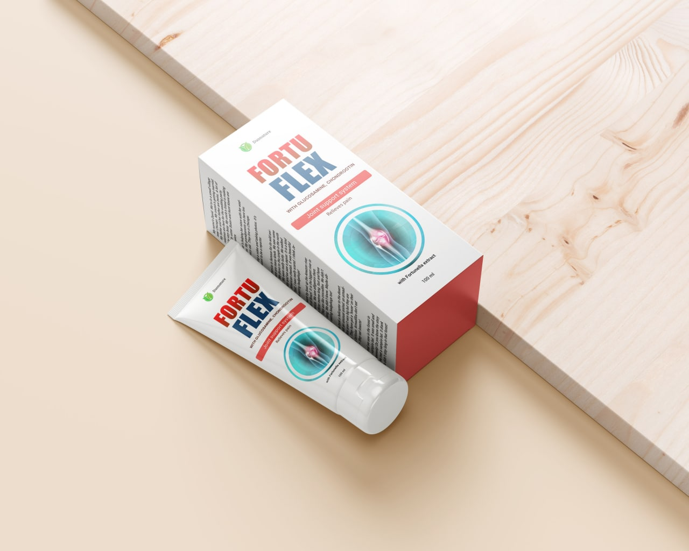
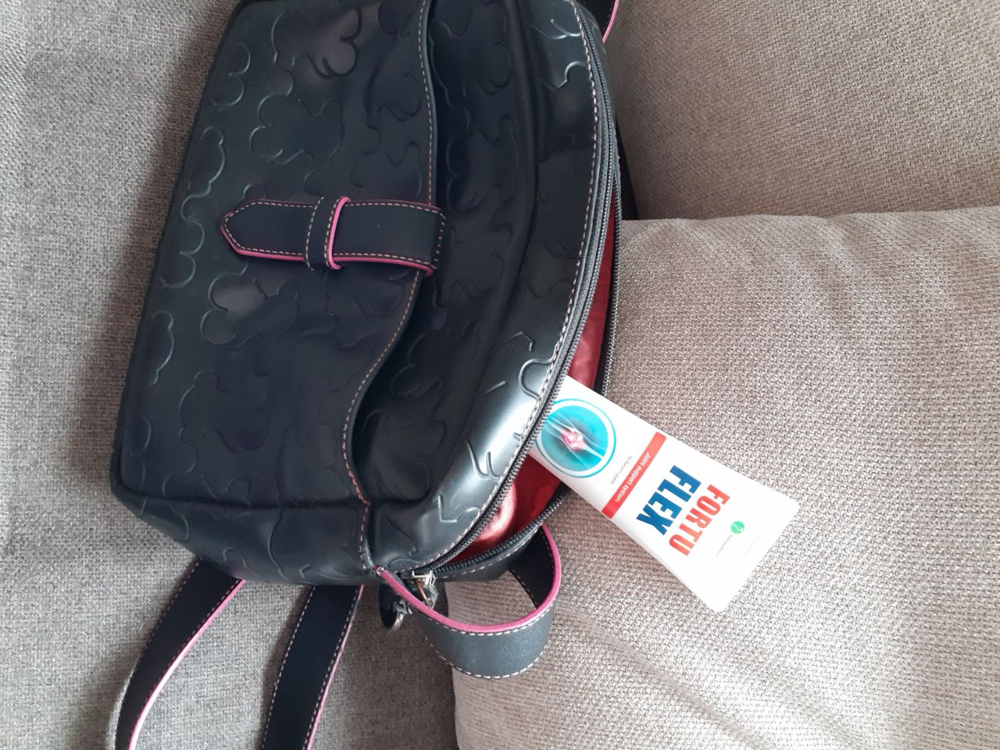
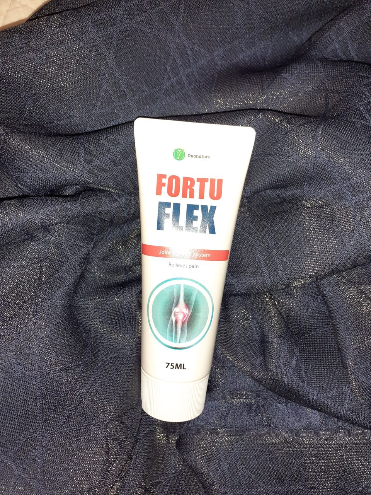

Am suferit de această problemă în ultimii ani. La început răbdam, dar apoi a devenit pur și simplu insuportabil. Urcam pe scenă și zâmbeam, dar de fapt înăuntru înnebuneam cu dureri în picioare…
În exclusivitate Tudor ne-a povestit redacției noastre:
Care este cel mai important lucru în tratamentul articulațiilor?
De ce 95% dintre oameni nu pot scăpa de această problemă?
Cum pot bolile articulare să provoace complicații și, uneori, să ducă la amputare?
Ce remedii noi vă vor ajuta să scăpați odată pentru totdeauna de durerile articulare?
În mai 2001, m-am împiedicat și am căzut puternic pe genunchi. A fost extrem de dureros pentru mine și am putut să mă ridic doar cu ajutorul asistentului meu, care era în apropiere. După câteva zile durerea a dispărut și nu i-am acordat atenție. Viața mergea înainte.
10 ani mai târziu, încă cântam, dar au început problemele mele de sănătate. La început, genunchiul mă durea doar pe vreme rea. Apoi am început brusc să șchiopătez în timp ce genunchiul meu făcea clic și mă durea mai mult.
Performanțele mele au continuat. Am fost activ - concerte, excursii, familie. Nu am vizitat medicii pentru că m-am simțit grozav. Până când a venit ziua în care nu m-am putut ridica din pat.
Într-o dimineață m-am trezit și nu m-am mai putut ridica. Nu mai puteam de durere și genunchiul a început să se umfle. Fără să mă gândesc prea mult am chemat ambulanța.
Apoi viața m-a târât într-un vârtej nebun: teste, IV-uri, radiografii și vizite nesfârșite la medici. Toată lumea spunea același lucru — artrită.
Foloseam în mod constant diferite unguente și pastile pentru durere... am încercat să păstrez programul concertelor! De dragul celor care iubesc cântecele mele și de dragul meu, pentru că nu-mi pot imagina viața fără muzică.
În general, am ajuns într-o stare atât de tristă încât articulația a devenit imobilă, nu am putut să-mi calc piciorul și ieșeam pe scenă doar după o injecție anestezică.
I-am spus asistentului meu despre asta. Că aproape am devenit invalid pe viață. Am început să căutăm un medic privat care să mă poată pune rapid pe picioare…
"Fără spectacole, concerte și efort fizic, acum doar odihnă la pat, cel puțin o jumătate de an", a spus doctorul atunci, aceste cuvinte pur și simplu m-au distrus. Am fost îngrozit, știi, cum să nu lucrez cel puțin o jumătate de an!? Și pentru prima dată în viața mea, mi-a fost frică pentru viața mea.
Am început să încerc diverse practici netradiționale, chiar și acupunctura. O grămadă de injecții, știam deja întreaga farmacie pe de rost și nimic nu m-a ajutat, iar nici medicul nu știa ce să facă.
2 luni mai târziu, întreaga mea echipă a venit la mine acasă, cuvintele lor erau asurzitoare ca tunetul: "trebuie să anulăm concertele.
Apoi au început bârfele, zvonurile, presa a continuat să sape și să scrie că mi s-a întâmplat ceva. După publicitate, am primit un telefon de la un vechi prieten al medicului care m-a ajutat cu mulți ani în urmă!
"Am aflat despre problema ta. De ce nu ai venit la mine? Tocmai am aflat despre un studiu, noua formulă a ajutat deja mulți oameni" — am început a țipa la el să vină și să mă ajute cât mai curând posibil, eram gata să-i dau toți banii!
Primul lucru pe care mi l-a spus a fost că, dacă te doare genunchiul, chiar ușor, nu înseamnă că totul este inofensiv.
Așa arată distrugerea treptată a articulației. În cazul meu, vătămarea a provocat complicații și a început să se dezvolte o infecție. Indiferent de locul rănirii, procesul patologic se desfășoară conform unei singure scheme. În primul rând, echilibrul dintre procesele de creștere și distrugere a cartilajului este perturbat în grosimea țesutului, iar apoi începe distrofia și degenerarea. În acest moment, apar modificări ale microstructurii cartilajului care sunt invizibile pentru ochi, ceea ce duce la subțierea și crăparea acestuia. Am învățat asta de la un profesionist.
Există o mulțime de boli articulare. Acestea pot fi probleme relativ minore, cum ar fi disconfort simplu, leziuni, durere, precum și patologii mai grave, inclusiv artroză, artrită, osteoartrită și cele mai grave cazuri — osteoporoză.
Lista complicațiilor articulațiilor bolnave:
Osteoartrita - este distrugerea treptată a cartilajului și proliferarea țesutului osos;
Dislocări obișnuite, subluxații ale articulațiilor vertebrale;
Încălcarea inervației și a alimentării cu sânge a membrelor, a zonelor corpului;
Leziunea purulentă a țesuturilor.
înconjurătoare - începe infecția și problema nu este numai cu articulația;
Osteomielita, osteoartrita poate duce la deformarea articulațiilor și la schimbarea completă a scheletului;
Insuficiență cardiacă, pulmonară în cazurile de otrăvire a sângelui, o probabilitate mare de deces;
Sepsisul otrăvirea sângelui.

De la medicul meu, am aflat despre cercetările Chineze privind restaurarea articulațiilor și oaselor. Se pare că de câțiva ani oamenii de știință au dezvoltat o formulă din ingrediente complet naturale care vizează restaurarea completă a țesutului articular care activează procesul de regenerare. Se bazează pe elementele de bază ale medicinei tradiționale chineze combinate cu elementele de bază ale medicinei occidentale moderne.
Această CREMĂ INCREDIBILĂ nu numai că ameliorează instantaneu durerea, ci și vindecă complet artrita, osteoartrita și osteoporoza într-un singur tratament și, cel mai important, este capabilă să refacă oasele și articulațiile.
Vă întrebați, ce fel de cremă este asta? Îmi dezvălui cărțile - este Fortuflex. Credeți-mă, nimeni nu mă plătește pentru publicitate, vreau doar să transmit tuturor informații importante din punct de vedere social, astfel încât oamenii să nu mai sufere și să cheltuiască sume uriașe de bani pe medicamente ineficiente care provoacă efecte secundare.

Inițial, Fortuflex a fost dezvoltat pentru persoanele în vârstă, deci acționează ușor și eficient. Grupul de cercetare a inclus persoane care suferă de dureri articulare și umflături cauzate de modificări legate de vârstă. După rezultate reușite, crema a fost testată și de cei a căror articulație a fost uzată de factori externi — fracturi, vânătăi, infecții etc.
După trei cicluri de cercetare, a devenit clar că formula ajută în mod activ toate persoanele cu probleme articulare de severitate variabilă. Ajută la ameliorarea instantanee a durerii, netezește inflamația și începe procesul de regenerare a țesutului osos și cartilaginos.
După ce am aflat despre formulă, am început să caut câteva informații pe Internet și recenzii ale unor persoane reale care folosesc Fortuflex.
Sa dovedit că articulațiile au fost restaurate în China din timpuri imemoriale. Cu ajutorul extractelor de plante: tătăneasă medicinală, chili sălbatic, eucalipt de citrice și multe altele.
Microparticulele Fortuflex pot pătrunde în adâncurile țesuturilor și pot restabili articulațiile odată pentru totdeauna.
Recenzie sinceră
Căutam câteva articole și recenzii despre Fortulex, a devenit interesant cât de mulți oameni știu despre asta. Sunt întotdeauna interesat de comentarii sincere de la oameni mai experimentați. Aceasta este recenzia pe care am găsit-o pe o resursă populară:
Fără să mai aștept, am decis să comand imediat! Crema a venit repede, prin curier direct acasă.
O evadare miraculoasă din anii de suferință
De îndată ce am primit Fortulex, am început să-l folosesc în fiecare zi. Am murdărit totul clar conform instrucțiunilor, mi-am dorit foarte mult să scap definitiv de aceste chinuri.
M-am întors în studio și apoi am urcat pe scenă.
Întreaga echipă m-a întâmpinat cu căldură. Acum regret doar un singur lucru, că nu existau instrumente atât de eficiente ca Fortuflex înainte! Ei bine, știința nu se oprește, iar oamenii noștri au învățat cum să creeze astfel de instrumente de lucru și inofensive. Și, cel mai important, accesibil!
Apropo, zilele trecute m-am dus la o farmacie locală, și am întrebat dacă au Fortuflex - pentru un prieten am dorit să procur. Farmacistul mi-a spus că nu au această cremă și nu o vor avea. Am fost surprins. M-am gândit, de ce este un instrument atât de bun și nu este vândut?! Este același lucru de la boala articulară pe care o puteți scăpa imediat de toți oamenii care suferă de ea. Am sunat producătorii și am întrebat de ce. Răspunsul lor m-a surprins. Apoi am văzut că au scris deja despre asta pe Internet.
Au efectuat o anchetă cu întreaga echipă și au descoperit incredibilul.
Iată ce scriu ei:
"Lanțurile de farmacii câștigă bani destul de buni pentru tratamentul articulațiilor. Oamenii își duc banii la ei toată viața. Și, prin urmare, nimeni nu este interesat de tratarea lor.
Dar aceasta este o adevărată crimă! Faptul este că aceste remedii elimină doar simptomele, nu cauza problemei. Ei distrug sistemul imunitar, deschizând porțile către diferite boli și chiar oncologie. Potrivit statisticilor, persoanele cu aceste medicamente mor cu 15-20 de ani mai devreme decât colegii lor - și în 65% din cazuri din cauza bolilor secundare!
Acum pun în mod activ bețe în roțile unui nou remediu comun "Fortuflex", care a fost dezvoltat de oamenii noștri de știință în cadrul programului de cooperare științifică și economică cu Republica Populară Chineză.
Acesta este un produs de nouă generație, nu are analogi în lume. Unicitatea remedierii este că restabilește țesutul osos distrus o dată pentru totdeauna, fără a provoca efecte secundare.
Pe lângă Europa, Japonia și China, Fortuflex a finalizat cu succes studii clinice în SUA."
Farmaciile au propria lor mafie și confruntări. Ei vând numai medicamente care sunt profitabile pentru ei, pentru care producătorul le dă mită. Și se vând mult și nu există niciun beneficiu acolo. Sunt doar afaceri. Nimeni nu vrea să se gândească la sănătate acolo, au nevoie doar de oameni ca clienți!!!
Vă doresc tuturor sănătate bună, aveți grijă de dvs. și de cei dragi!
P.S. crema Fortuflex nu se vinde în farmacii. Producătorul vinde produsul direct din fabrică, pentru a evita marjele farmaciei și pentru a proteja publicul de falsuri. Redacția noastră aplică un formular oficial de comandă pentru a primi crema dvs:
Comentarii:
Victor
Tudor, tu ești idolul meu! Dar nu pot scăpa în niciun fel de artroză. Am vizitat atât de mulți medici, am dus atât de mulți bani la farmacii, mamă dragă! Dar nu are rost. Genunchiul este deja deformat. Și doctorul m-a speriat, spune că voi rămâne infirm pentru totdeauna acum dacă încep boala. Acum voi încerca crema, poate cel puțin va ajuta.

Apreciat
Răspunde
Traduce
Acum 1 oră
Andreea Popescu
Fortuflex l-a ajutat pe tatăl meu să scape de artrită. Mi-a fost foarte teamă că nu va putea niciodată să mearg normal. Ducea toți banii în farmacii, jumătate din salariul mergea pentru diverse unguente și pastile, până când un prieten de la serviciu ne-a povestit despre Fortuflex. Am comandat imediat un tratament complet - este profitabil, cât și sigur. Dacă boala nu este distrusă la timp, va continua să progreseze.
Apreciat
Răspunde
Traduce
Acum 1 oră
Mihai Ionescu
Bună! Am 72 de ani și am suferit de osteochondroză în ultimii 15 ani. Medicii m-au vindecat cu tot felul de medicamente, dar sunt complet inutile. Și câți bani am cheltuit este înfricoșător de numărat. Am mers chiar și la centrul raional pentru a vedea un medic, care a recomandat o operație și unele proceduri pentru 600 mln.. Da de unde așabani la un pensionar? Am rugat-o pe fiica mea să mă ajute și ea a găsit această cremă Fortuflex. Am început să aplic și după două luni a devenit mult mai bine - picioarele mele vechi merg ca la un tânăr :)
Apreciat
Răspunde
Traduce
Acum 1 oră
Ion Mihai
Această artroză m-a distrus! Nu mai am nici o putere deja de 5 ani. Este cu adevărat posibil să scap de dureri?, nu mai sper la nimic…
Apreciat
Răspunde
Traduce
Acum 1 oră
Adrian Dumitrescu
Ion, foarte binete înțeleg ... aceeași poveste a fost și la mine. Urlam de durere. Ia Fortuflex , nu vei regreta. El m-a ajutat pe mine și pe întreaga mea familie.
Apreciat
Răspunde
Traduce
Acum 1 oră
Maria Ionescu
Tudor, mulțumesc pentru povestea ta! Ai dreptate - dacă nu de dragul nostru, atunci de dragul celor dragi trebuie să avem grijă de sănătatea noastră. Experiența ta m-a ajutat foarte mult, pentru că soțul meu suferă de artrită. Dar acum știu cum îl pot ajuta! Vă mulțumesc din nou foarte mult!
Apreciat
Răspunde
Traduce
Acum 1 oră
Elena Stan
Fiica mea mi-a dat această cremă. Doctorul mi-a prescris o sumă atât de astronomică de tot felul de medicamente!!! Groază. Este bine că am aflat despre acest Fortuflex. Laud acest medicament! O cremă foarte eficientă, totul a dispărut.

Apreciat
Răspunde
Traduce
Acum 1 oră
COMANDĂ
Maria
Vă mulțumim pentru articol, este foarte relevant!
Apreciat
Răspunde
Traduce
Acum 1 oră
Margareta
Durerile de spate nu îmi permit să-mi trăiesc normal viața și să dorm. Simt dureri peste tot. Am schimbat salteaua și perna, dar fără rezultat. Am luat o cură de medicamente și vitamine prescrise de un neurolog, fac exerciții fizice în mod regulat, dar tot încă mă doare spatele.
Apreciat
Răspunde
Traduce
Acum 1 oră
Ioana
Am avut o situație similară cu spatele meu. Doar covorul cu ace îmi ușura durerea. Dar dupa 10 minute spatele amorțea din nou. Am fost la un chiropractician chirurg osteopat traumatolog. Am urmat toate recomandările dar fără rezultat, iar Fortuflex ma ajutat. Crema este universală, m-a ajutat nu numai cu spatele, ci și cu entorsele pe picioare.
Apreciat
Răspunde
Traduce
Acum 1 oră
Andrei
Aveam un pinten de călcâi și inflamație la gleznă. Am folosit un branț ortopedic și am încercat toate unguentele de la farmacie. Nimic nu a ajutat. Și durerea devenea din ce în ce mai puternică. Apoi am luat Fortuflex și am decis să-l încerc. Nu am efecte secundare de la el iar durerile și umflăturile au dispărut. Acum pot să merg repede și chiar să alerg.
Apreciat
Răspunde
Traduce
Acum 1 oră
Daniela
Nu înțeleg cum o cremă poate înlocui toate antibioticele, steroizii etc.?
Apreciat
Răspunde
Traduce
Acum 1 oră
Dumitru
Nu știam că e posibil. Medicul meu a prescris această cremă pentru tratamentul bursitei cu fizioterapie și pastile. Apoi a eliminat treptat totul, cu excepția cremei, deoarece numai Fortuflex ajută. Am încetat să mai iau analgezice, antiinflamatoare și unguente cu steroizi. Am făcut o radiografie, iar doctorul a spus că totul este în regulă.
Apreciat
Răspunde
Traduce
Acum 1 oră
Laura
Am reușit să-l comand cu reducere, iar prietenul meu a cumpărat Fortuflex la preț complet. Acum există din nou o ofertă specială pe site și nimeni nu știe cât va dura.
Apreciat
Răspunde
Traduce
Acum 1 oră
COMANDĂ
Mihai O.
Cred că e mult mai bine să mergi la o sală de fitness. Un antrenor bun și exercițiile fizice fac o treabă excelentă cu toate articulațiile.
Apreciat
Răspunde
Traduce
Acum 1 oră
Ramona
Da este clar că toată lumea ar trebui să facă sport, dar totuși nu toată lumea are așa posibilitate. Eu personal încep ziua în fiecare dimineață cu un antrenament, dar genunchii oricum îmi scârțâie în timpul genuflexiunilor. Trebuie să încerc acest produs, nu știi niciodată ce te va ajuta...
Apreciat
Răspunde
Traduce
Acum 1 oră
Roxana
Este bine că există Fortuflex . Îmi amintesc când aveam 25 de ani, am fost diagnosticată cu "osteochondrită cervicală + sindrom de arteră vertebrală fixată". Am fost la spital. Am făcut injecții și fizioterapie. Am ieșit din spital și inima a început să bată mai rapid, totul s-a întunecat, am început să transpir, tensiunea arterială și pulsul erau mari. Ambulanța m-a dus din nou la spital. Cel mai neplăcut lucru este că, după ce am petrecut încă 10 zile acolo, medicii nu mi-au diagnosticat nimic. Așa că am petrecut încă 20 de ani luptând împotriva osteocondrozei. Aceasta nu este viață, ci chin continuu. Am cheltuit mulți bani. Și recent, fiica mea cea mică la vârsta de 20 de ani a început să sufere și ea de osteochondroză. A găsit Fortuflex и și l-a cumpărat imediat pentru mine și pentru ea însăși. Și cel mai important, crema ma ajutat! În sfârșit trăiesc viața deplină care mi-a lipsit întotdeauna.
Apreciat
Răspunde
Traduce
Acum 1 oră
COMANDĂ
© . Privacy policy.